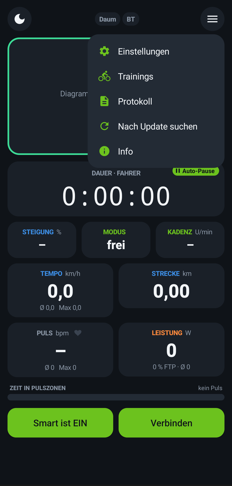
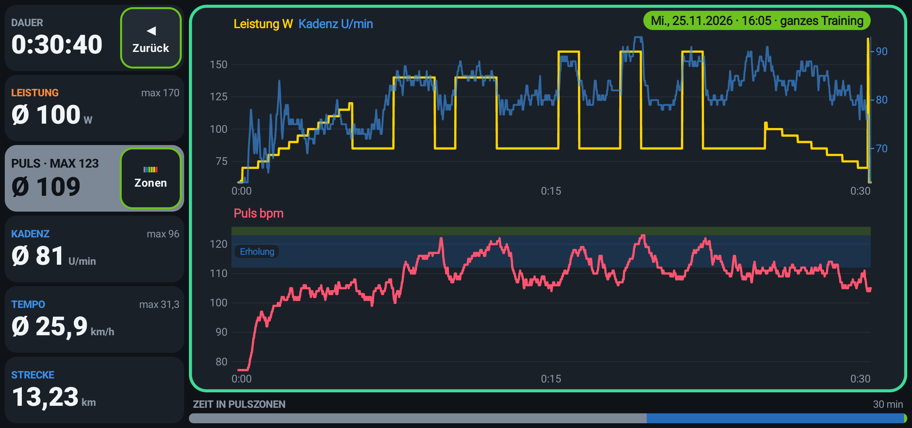
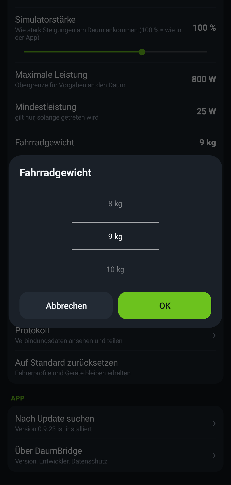
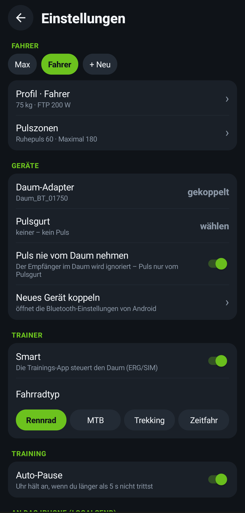
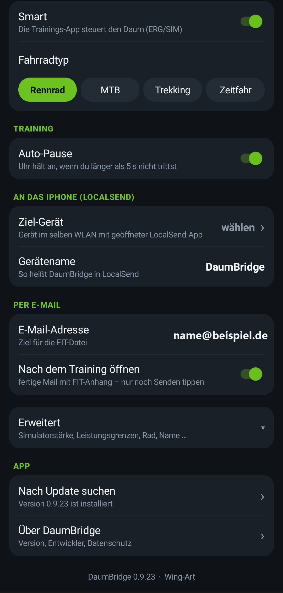

DaumBridge – Anleitung
Stand: Version 0.9.23
Inhalt: 1. Installieren · 2. Daum-Adapter koppeln · 3. Die Startseite · 4. Training · 5. Querformat · 6. Gespeicherte Trainings · 7. Trainings weitergeben · 8. Mit der Trainings-App verbinden · 9. Pulsgurt · 10. Fahrerprofile · 11. Pulszonen · 12. Smart, ERG und SIM · 13. Einstellungen im Überblick
1. Installieren
- Auf dem Android-Handy DaumBridge.apk herunterladen (oder unter Releases).
- Die Datei öffnen. Beim ersten Mal fragt Android, ob der Browser (oder Dateimanager) Apps installieren darf → erlauben, zurück, Installieren.
- Beim ersten Start fragt DaumBridge nach Bluetooth („Geräte in der Nähe“) und Benachrichtigungen → beides erlauben. Ohne Bluetooth geht nichts; die Benachrichtigung zeigt, dass ein Training läuft.
Updates: DaumBridge meldet neue Versionen selbst. Von Hand: Menü ☰ → Nach Update suchen. Einstellungen, Profile und Trainings bleiben bei einem Update erhalten.
Kommt beim Installieren auf älteren Handys die Meldung „Google Play Store angehalten“, ist das die Sicherheitsprüfung des Play Stores, nicht DaumBridge – siehe FAQ.
2. Daum-Adapter koppeln (einmalig)
Kein originaler Daum-Adapter? Ein handelsüblicher Bluetooth-RS232-Adapter geht auch – siehe Bluetooth-Adapter.
- Den Daum einschalten – der Bluetooth-Adapter muss am Daum stecken.
- Am Handy Android-Einstellungen → Bluetooth öffnen (oder in DaumBridge: Einstellungen → Geräte → Neues Gerät koppeln).
- Den Adapter in der Liste antippen (meist ein Name wie
Daum_BT_…). - PIN: Fragt Android danach, ist es die 4-stellige Nummer, die auf dem Adapter steht. Manche Adapter koppeln ohne PIN – das ist normal.
- Zurück in DaumBridge: Menü ☰ → Einstellungen → Geräte → Daum-Adapter und den Adapter auswählen.
3. Die Startseite



- Oben links ☾ / ☀ schaltet zwischen dunkel und hell.
- Chips in der Mitte: Daum (Verbindung zum Ergometer), BT (Trainings-Apps, die verbunden sind; die Zahl zeigt wie viele) und Puls (Pulsgurt). Grau = aus, gelb = wird gesucht/aufgebaut, grün = verbunden. Antippen zeigt das Fenster Verbindungen mit allen Details.
- Menü ☰ oben rechts: Einstellungen, Trainings (gespeicherte Fahrten), Protokoll, Nach Update suchen, Info.
- Diagramm-Karte: zeigt beim Fahren Leistung, Kadenz und Puls der letzten 10 Minuten (siehe Training). Einfaches Antippen dreht die Karte zum Logo und zurück.
- Dauer-Karte: Fahrzeit, dahinter der aktive Fahrer („DAUER · FAHRER“) – antippen wechselt den Fahrer, solange kein Training läuft. Rechts oben der Schalter ⏸ Auto-Pause.
- Kacheln: Steigung, Modus (frei/ERG/SIM), Kadenz, Tempo, Strecke, Puls und Leistung, jeweils mit Ø und Max.
- Zeit in Pulszonen: Streifen mit den Anteilen der Pulszonen an der bisher gefahrenen Zeit.
- Unten: Smart ist EIN/AUS (siehe Smart, ERG und SIM) und Verbinden bzw. während des Trainings Stopp.
4. Training
- Auf der Startseite Verbinden tippen. Der Chip Daum wird grün, sobald die Verbindung steht.
- Der Chip BT wird grün, sobald eine Trainings-App verbunden ist.
- Die Uhr startet mit dem ersten Tritt – vorher steht über der Zeit „WARTET AUF DEN ERSTEN TRITT“ (im Querformat „WARTET AUF 1. TRITT“) und es wird noch nichts aufgezeichnet. Du kannst also in Ruhe Verbinden tippen und erst später losfahren.
- Die Diagramm-Karte zeigt Leistung (gelb) und Kadenz (blau) oben, Puls (rot) unten. Mit dem Finger nach rechts wischen blättert zurück, Doppeltipp springt wieder auf live.
- Auto-Pause: Das Schild ⏸ Auto-Pause in der Dauer-Karte schaltet sie ein (grün) oder aus (grau). Eingeschaltet hält die Uhr an, wenn du länger als 5 Sekunden nicht trittst – das Schild zeigt dann gelb PAUSE, die Zeit wird gelb. Pausen zählen nicht in Dauer, Durchschnitte, Zonenzeit und FIT-Datei.
- Fertig? Stopp tippen – danach erscheint die Zusammenfassung (Dauer, Strecke, Leistung, Normalized Power, Arbeit in kJ, Puls, Zeit in Pulszonen).
- In der Zusammenfassung: Training teilen (FIT) …, An … senden (LocalSend) und – wenn eingestellt – Per E-Mail. Die Zusammenfassung bleibt beim Teilen offen.
So liest du das Diagramm: - Die Skalen passen sich automatisch an: Leistung (Skala links), Kadenz (eigene blaue Skala rechts) und Puls füllen jeweils rund 80 % ihrer Fläche – auch kleine Unterschiede sind gut sichtbar. Wenn sich die Werte ändern, gleitet die Skala weich mit. - Kurzes Anfahren und Ausrollen (0 W, 0 U/min) und einzelne Ausreißer verzerren die Skala nicht. - Die Kadenz liegt halbtransparent vor der Leistung und ist im Diagramm über 5 Sekunden geglättet. Die Zahl in der Kachel und die FIT-Datei bleiben ungeglättet.
Bricht die Verbindung zum Daum ab (Adapter kurz aus, außer Reichweite), wird der Chip Daum gelb und DaumBridge verbindet sich selbst neu. Das Training läuft weiter.
5. Querformat
Handy quer drehen – das Training läuft einfach weiter.

- Links eine schmale Spalte mit allen Werten übereinander in großen, fetten Zahlen: Dauer, Leistung (mit % FTP), Puls, Kadenz (mit Ø), Tempo (mit Ø), Strecke.
- Rechts das große Diagramm (vier Fünftel der Breite) mit den Pulszonen als farbigen Bändern hinter dem Puls. Ein Punkt markiert die aktuelle Position, das Diagramm läuft mit.
- Zoomen mit zwei Fingern (1 bis 30 Minuten), wischen blättert zurück, Doppeltipp beendet Zoom und Zurückblättern. Ein grünes Schild oben rechts zeigt, wenn gezoomt oder zurückgeblättert ist.
- Puls-Kachel: färbt sich in der aktuellen Pulszone und zeigt deren Namen (z. B. „Z2 · FETTVERBRENNUNG“). Der Puls steht ohne „bpm“, damit die Zahl groß bleibt. Daneben das ♥ im Pulstakt und die Batterie des Gurts (nur als Farbe).
- Quadratische Knöpfe: Auto-Pause (in der Dauer-Kachel) und Zonen (in der Puls-Kachel) – Zonen blendet den Streifen Zeit in Pulszonen unten ein oder aus; ohne Streifen wird das Diagramm größer.
- Zeit in Pulszonen nutzt immer die ganze Breite und zeigt die Anteile an der bisher gefahrenen Zeit; rechts steht die Fahrzeit. Beim Zoomen bleibt der Streifen unverändert.
- Hochkant drehen = zurück zur normalen Ansicht.
6. Gespeicherte Trainings
Jedes Training ab 30 Sekunden bleibt auf dem Handy gespeichert – bis du es löschst oder die App deinstallierst.
Menü ☰ → Trainings listet alle Fahrten (neueste oben) mit Datum, Dauer, Strecke, Ø-Leistung, Ø-Puls und Fahrer. Bereits geteilte Trainings haben ein ✓ mit der App, an die geteilt wurde. Ein Training antippen bietet:
| Eintrag | Was passiert |
|---|---|
| Diagramm ansehen | öffnet das Training im Querformat (siehe unten) |
| Teilen … | Teilen-Menü von Android: Telegram, Google Drive, Dropbox, Synology, MaxUp … |
| An … senden | per LocalSend ans iPhone; ist noch kein Gerät gewählt: An iPhone senden – Ziel wählen |
| Per E-Mail | nur wenn eine Adresse eingestellt ist |
| Löschen (rot) | mit Rückfrage, lässt sich nicht rückgängig machen |
Aufräumen (rot, unter der Liste) löscht mehrere auf einmal: älter als 3 Monate, älter als 1 Jahr, alle bereits geteilten oder alle – immer mit Rückfrage und Hinweis, wenn noch nicht geteilte dabei sind.
Diagramm ansehen
Das Training öffnet sich in der gewohnten Querformat-Ansicht – das Handy dreht sich dafür automatisch quer:
- Links: Dauer mit ◀ Zurück, Ø-Leistung, Ø-Puls, Ø-Kadenz, Ø-Tempo jeweils mit Maximalwert, und die Strecke. Die Puls-Kachel hat die Farbe der Zone, in die der Durchschnittspuls fällt.
- Rechts: Leistung, Kadenz und Puls über das ganze Training, mit Auto-Zoom und Pulszonen-Bändern. Oben steht ein Schild mit Datum und Uhrzeit.
- Unten: Zeit in Pulszonen fürs ganze Training (Knopf Zonen blendet ihn aus).
- Zwei Finger = zoomen, wischen = blättern, Doppeltipp = wieder das ganze Training.
- Die Pulszonen kommen vom Fahrer, der das Training gefahren ist. Das funktioniert auch mit älteren Trainings, weil alles direkt aus der gespeicherten FIT-Datei gelesen wird.
7. Trainings weitergeben
Die FIT-Datei enthält Leistung, Kadenz, Puls, Tempo und Strecke Sekunde für Sekunde – MaxUp, Strava, Garmin Connect, Intervals.icu, TrainingPeaks & Co. zeichnen daraus beim Import ihre eigenen Diagramme.
Ans iPhone (LocalSend)
DaumBridge schickt Trainings direkt an ein Gerät im selben WLAN, auf dem die kostenlose App LocalSend läuft – z. B. ein iPhone. Auf dem Android-Handy ist keine zusätzliche App nötig.
- Auf dem iPhone LocalSend aus dem App Store installieren, öffnen und „Lokales Netzwerk“ erlauben. Tipp: in LocalSend Schnellspeichern einschalten, dann ist kein Annehmen nötig.
- In DaumBridge: Einstellungen → An das iPhone (LocalSend) → Ziel-Gerät – DaumBridge sucht im WLAN, iPhone antippen. Alternativ direkt beim Senden: Ist noch kein Ziel gewählt, steht dort An iPhone senden – Ziel wählen und öffnet dieselbe Geräteauswahl.
- Nach dem Training senden eingeschaltet: Beim Stopp geht die FIT-Datei automatisch ans iPhone. Die Zusammenfassung zeigt „Sende …“, „✓ gesendet“ oder einen Hinweis, falls das iPhone nicht erreichbar war.
- Auf dem iPhone liegt die Datei in der Dateien-App im Ordner LocalSend – antippen, teilen, z. B. an MaxUp.
LocalSend muss auf dem Empfänger geöffnet sein, wenn gesendet wird. Das Ziel-Gerät wird pro Handy gespeichert – fahren mehrere mit eigenem Handy, richtet jeder es einmal ein. Klappt das Senden nicht (vor allem von älteren Handys mit Android 7): in LocalSend am iPhone unter Einstellungen Verschlüsselung ausschalten.
Per E-Mail
Einstellungen → Per E-Mail → E-Mail-Adresse eintragen. Dann gibt es in der Zusammenfassung und unter Menü ☰ → Trainings den Eintrag Per E-Mail: Die Mail-App öffnet sich mit Empfänger, Betreff, Kennzahlen und der FIT-Datei im Anhang – nur noch Senden tippen. Mit Nach dem Training öffnen geht die fertige Mail beim Stopp von selbst auf.
Teilen
Training teilen (FIT) … bzw. Teilen … öffnet das Teilen-Menü von Android – jede App, die Dateien annimmt (Telegram, Google Drive, Dropbox, Synology Drive, MaxUp …).
8. Mit der Trainings-App verbinden
DaumBridge erscheint in der Trainings-App als Smart-Trainer mit dem Namen DaumBridge (änderbar unter Einstellungen → Erweitert → Bluetooth-Name). Manche Apps hängen eine Nummer an, z. B. „DaumBridge-4874“ – das ist richtig so.
Zwift
Gepaarte Geräte → bei Leistung, Trittfrequenz und Steuerbarer Trainer jeweils DaumBridge wählen.
MyWhoosh
Geräte verbinden → Smart Trainer → DaumBridge. Trittfrequenz kommt automatisch mit.
Apple TV
Wie bei Zwift. Hinweis: Apple TV verbindet höchstens zwei Bluetooth-Geräte gleichzeitig (Fernbedienung zählt mit). Den Pulsgurt deshalb über DaumBridge laufen lassen (siehe unten) – dann reicht eine Verbindung.
Puls in der Trainings-App
Kommt der Puls über DaumBridge, in der Trainings-App bei Herzfrequenz ebenfalls DaumBridge wählen.
9. Pulsgurt (optional)
DaumBridge verbindet sich selbst mit einem Bluetooth-Pulsgurt (z. B. Polar H9/H10, Garmin, Wahoo), zeigt den Puls an und gibt ihn an die Trainings-App weiter.
- Den Gurt anlegen (Kontakte leicht befeuchten), damit er sendet.
- DaumBridge → Einstellungen → Geräte → Pulsgurt → Pulsgurt suchen → Gurt antippen.
Trennen: Einstellungen → Geräte → Pulsgurt → Pulsgurt trennen (roter Knopf) oder oben auf die Chips tippen → Verbindungen → Pulsgurt trennen. Der Gurt ist dann sofort frei für Uhr oder andere Geräte.
Koppeln in den Android-Einstellungen ist nicht nötig – viele Gurte lehnen das sogar ab („Kopplung abgelehnt“). Bis Android 11 fragt Android für die Suche einmal nach dem Standort und der Standort muss eingeschaltet sein; DaumBridge nutzt ihn nicht.
Sobald die App offen ist, verbindet sie sich mit dem Gurt – der Puls steht schon vor dem Start in der Kachel. Ist die App im Hintergrund und läuft kein Training, trennt sie den Gurt nach 20 Sekunden wieder.
Herz und Akku: Das ♥ in der Puls-Kachel ist rot und schlägt im Takt deines Pulses, sobald Werte kommen, gelb, solange der Gurt gesucht wird, und grau, wenn kein Gurt verbunden ist. Der Chip Puls oben zeigt dasselbe (grün/gelb/grau). Eine senkrechte Batterie zeigt den Akkustand des Gurts – grün, unter 20 % gelb, unter 10 % rot; unter 15 % erscheint beim Verbinden einmal ein Hinweis. Gurte, die keinen Akkustand melden, zeigen keine Batterie.
Puls nie vom Daum nehmen: Dieser Schalter unter Einstellungen → Geräte ist ab Werk an. Der ungenaue Pulsempfänger im Daum wird dann ignoriert, der Puls kommt nur vom Bluetooth-Gurt; ohne Gurt bleibt die Puls-Kachel leer. Nur wer ohne Gurt trotzdem den Daum-Puls möchte, schaltet ihn aus.
Offensichtliche Messfehler (z. B. 199 bpm im Sitzen bei schlechtem Hautkontakt oder sprunghafte Ausreißer) filtert DaumBridge heraus. Springt der Puls trotzdem stark: Elektroden anfeuchten, Gurt enger stellen, Batterie prüfen.
Wichtig: Viele Gurte (z. B. Polar H9) erlauben nur eine Bluetooth-Verbindung. Ist der Gurt schon mit Laptop, Uhr oder Trainings-App verbunden, bekommt DaumBridge keine Werte – dort also trennen.
10. Fahrerprofile
Fahren mehrere Personen, bekommt jede ein eigenes Profil mit Geburtsdatum, Gewicht, FTP, Pulsgurt, Pulszonen und Simulatorstärke.
- Einstellungen → Fahrer → + Neu legt ein Profil an.
- Auf ein Profil tippen wählt es aus; das aktive Profil nochmal antippen → umbenennen oder löschen.
- Profil › öffnet eine eigene Seite mit Name, Geburtsdatum, Geschlecht, Gewicht und FTP.
- Auf der Startseite steht der aktive Fahrer bei der Dauer. Antippen wechselt den Fahrer (wenn kein Training läuft).
Werte stellst du mit Drehrädern ein – keine Tastatur nötig:

11. Pulszonen und Zonenfarben

Einstellungen → Pulszonen zeigt Ruhepuls, Maximalpuls und die fünf Zonen:
| Zone | Farbe | Bedeutung |
|---|---|---|
| Erholung | blau | Grundlage, Regeneration |
| Fettverbrennung | grün | lange, ruhige Ausfahrten |
| Aerob | gelbgrün | verbessert die Ausdauer |
| Anaerob | gelb | hohe Intensität, Intervalle |
| Roter Bereich | rot | Maximalbelastung, nur sehr kurz |
Unterhalb der Erholungszone ist grau.
- Berechnung – zwei Methoden (umschaltbar, die Zonen rechnen sofort neu):
- Mit Ruhepuls (Karvonen): Untergrenzen = Ruhepuls + 50 / 60 / 70 / 80 / 90 % der Pulsreserve (Maximalpuls − Ruhepuls). Berücksichtigt die Fitness – am besten, wenn du deinen Ruhepuls kennst (morgens im Liegen messen).
- % vom Max.: Untergrenzen = 70,5 / 76,5 / 82 / 88 / 94 % vom Maximalpuls. Einfach, braucht nur den Maximalpuls.
- Welche Methode? › auf der Zonen-Seite erklärt beide.
- Änderst du Ruhe- oder Maximalpuls, werden die Zonen nach der gewählten Methode neu berechnet.
- Automatisch berechnen: berechnet die Zonen nach der gewählten Methode. Ist ein Geburtsdatum hinterlegt, schlägt DaumBridge einen Maximalpuls aus dem Alter vor.
- Selbst einstellen: Jeden Wert antippen und per Drehrad ändern. Ein gemessener Maximalpuls (Leistungstest, Pulsuhr) ist genauer als die Schätzung.
Beim Fahren färben sich die Kacheln Puls und Leistung nach Zone. Die Leistungszonen richten sich nach der FTP im Profil. Der Streifen Zeit in Pulszonen nutzt immer die ganze Breite und zeigt die Anteile der Zonen an der bisher gefahrenen Zeit.
12. Smart, ERG und SIM
- Smart EIN: Die Trainings-App steuert den Daum – im ERG-Modus gibt sie Watt vor, im SIM-Modus Steigungen. Der Drehknopf am Daum wird dann überstimmt. Die Kachel Modus zeigt, was gerade gilt.
- Smart AUS: DaumBridge misst nur; die Leistung stellst du am Daum selbst ein.
- Simulatorstärke (Erweitert): 100 % = Steigungen wie in der App, 50 % = halb so steil. Achtung: Zwift hat einen eigenen Regler „Trainer-Schwierigkeit“ – beide wirken zusammen.
- Fahrradtyp (Rennrad, MTB, Trekking, Zeitfahr) bestimmt Roll- und Luftwiderstand, falls die App keine eigenen Werte schickt.
13. Einstellungen im Überblick



| Bereich | Einstellungen |
|---|---|
| Fahrer | Profile wählen, anlegen (+ Neu), umbenennen, löschen; Profil › (Name, Geburtsdatum, Geschlecht, Gewicht, FTP); Pulszonen › |
| Geräte | Daum-Adapter, Pulsgurt (suchen, wählen, trennen), Puls nie vom Daum nehmen (ab Werk an), Neues Gerät koppeln |
| Trainer | Smart ein/aus, Fahrradtyp |
| Training | Auto-Pause |
| An das iPhone (LocalSend) | Ziel-Gerät, Nach dem Training senden, Gerätename (so heißt DaumBridge in LocalSend) |
| Per E-Mail | E-Mail-Adresse, Nach dem Training öffnen |
| Erweitert | Simulatorstärke, maximale und minimale Leistung, Fahrradgewicht, Radumfang (für das Tempo, Standard 2100 mm), Bluetooth-Name, alte Daum-Firmware, Bildschirm anlassen, Abfrage-Intervall, Protokoll, Auf Standard zurücksetzen (Profile und Geräte bleiben erhalten) |
| App | Nach Update suchen, Über DaumBridge |
Probleme? → Häufige Fragen und Fehlerbehebung · Alle Änderungen: Versionen